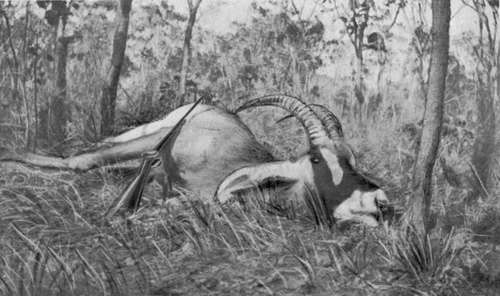

Further Shooting Experiences In Central Angoniland. Part 3
Description
This section is from the book "Wild Life In Central Africa", by Denis D. Lyell. Also available from Amazon: Wild Life in Central Africa.
Further Shooting Experiences In Central Angoniland. Part 3
On July 2 I shot an oribi and also a reedbuck ram that was running with four does. Reedbuck and oribi are usually seen in couples, although one sometimes sees from three to live of each species together. The medium and smaller sized antelopes do not seem to care to intermingle with other species as do sable, hartebeest, gnu, and zebras.
Perhaps the most companionable antelope is the hartebeest, and solitary bull gnus are also fond of seeking the company of a herd of hartebeests, as I have noticed on several occasions.
On the 9th I wounded a bull roan, and although I tried my best to find it I was unsuccessful, as I lost the spoor on some hard ground, for the animal began to walk slowly and leave very shallow impressions behind.
Being unwell on the following day, I sent out a man named Zovi with some other men to look for the roan, as he had been with me when I hit it and knew where to go. They found it and finished it with a few spear thrusts, so I only kept the hind legs, skin, and head, and gave the natives the rest of the meat.
At this time I was collecting blood smears of game for the Sleeping Sickness Commission, which had a big camp at Kasu Hill, away to the south; and for this purpose I had got permission to shoot game above the number allowed on my licence. However, I did not need to shoot much extra game, and I only did so when I got into other parts of the country where there was a better chance of finding parasites in the blood of the game. As there were few tsetse flies in this locality, it was most improbable that any parasites of sleeping sickness would be found in the blood of game here; and so it proved, for all the slides I sent to Sir David Bruce were found to be free of trypanosomes.
In taking blood smears it is usual to take two from each animal. One is called a thin smear and the other a thick smear. To take the former a drop of blood about the size of a S.S.G. shot is dropped on one end of the slide, and with the smooth edge of another slide this is flattened and spread on the glass. A larger drop of blood is used for the thick smear, and it is allowed to partially dry before rubbing, so that it will be thicker in form.
Roan Bull Shot In North-Eastern Rhodesia (Horns 27in., curve.)
As there were more roan antelopes about and I wanted their blood for smears, I went out on the 11th, and when tramping along with Zovi I saw a herd of the wanted animals, so I shot two, a bull and a cow. The bull had a pretty, though not long, pair of horns, as they only measured 26in. on the curve.
The best roan head I ever saw is, unhappily, not in my collection, as he went off, taking with him a really fine pair of horns. It was on a wet day, as I was tramping from the Luangwa River to Fort Jameson, in North-Eastern Rhodesia, and I was within eight miles of Sasare Mine at the time. As I led the party, with a man behind carrying my rifle in its cover to protect it from the wet, I suddenly saw the roan standing in a small dambo within seventy yards of the road. He saw us at the same moment, but did not run at once. I sprang for the rifle and dragged it from its cover and pumped a cartridge into the barrel from the magazine. Just at this moment the roan turned and went off very fast, and I am sorry to say that I missed him clean.
If I had not been very tired at the time, for I had come a long way that day, I would have followed him up and tried my best to kill him, as I saw that he had a lovely head. I had just got this rifle out from home, and did not know its shooting well, or I might have made a slightly better shot. It is often the way that the best heads are presented to one like this, and all the best trophies I have heard of as being shot in Central Africa have been due to lucky chances, and not to persistent efforts in tracking up, or looking for, an exceptional animal.
Captain Stigand's kudu was come on by chance, and the best buffalo head procured in North-Eastern Rhodesia was shot by a Mr. Grimes—the poor fellow soon after contracted sleeping sickness, of which he died—who was told by the natives that a big buffalo had been coming to their gardens, near where his camp was pitched. He went out and killed it with a .405 Winchester nitro rifle, and its horns measured over 48in. outside measurement, and, moreover, they were beautifully shaped and more closely resembled the heads shot in Uganda than the usual type of this country, which are seldom wide.
Again, Mr. Melland, of the Northern Rhodesian Administration, shot a grand bull elephant with a single '400 bullet before he noticed the size of the ivory. It ran off hard hit and was found later, and its tusks weighed close on 120lb., but they dried to about 1161b.
Many men who have never killed an animal of a certain species sometimes have the luck to get a very fine trophy at the first go off, and not long ago a friend of mine (Mr. W. P. Ronaldson) went to the Chiromo Marsh to shoot, and on his first day bagged two large lions. Now, I have been there several times, and I have heard lions roaring and grunting at night, but I have not had the luck to meet any in that locality, although it is a famed haunt of these large felines. I could give many other instances of men getting fine trophies or shooting some rare species (such as the inyala) purely by chance. I would give something to shoot an inyala, but as yet I have not seen one alive, and yet several men, some of whom have had slight experience, have been fortunate enough to shoot one in Nyasaland.
So it is in many circumstances of life, for those who want a thing do not get it, and those who care not are more fortunate.
At a certain moment one man may be soaked with rain, and at the same moment another man somewhere else on the face of the globe may be dying of thirst. It is a world of contrasts, but to meet them one has usually to go to the wild, unfenced wilderness. Those whose untamed spirits urge them to travel such country usually see the best and the worst, for their lives are spent amongst vivid contrasts. This spirit—the Germans aptly call it "wanderlust/' I think—dwells in the hearts of many at home who must long, at times, to get to the vast spaces of the earth. Those are the lucky ones who can go and return as they wish. Sometimes it is possible to get too much of the wilds, for comforts are rare and discomforts common. I think, judging from my own experience of tropical Africa, that one longs for the cold, exhilarating air of home more than for good food; although this, too, is often desired when one is low with fever and satiated with unpalatable stuff.
Continue to:
- prev: Further Shooting Experiences In Central Angoniland. Part 2
- Table of Contents
- next: Further Shooting Experiences In Central Angoniland. Part 4